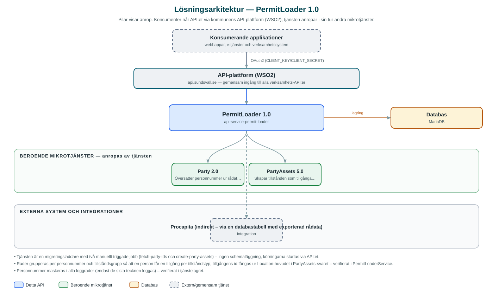

PermitLoader
Läser in färdtjänst- och riksfärdtjänsttillstånd från en rådataexport ur Procapita och registrerar dem som tillgångar i PartyAssets.
Om API:et
När kommunens färdtjänsttillstånd flyttas från verksamhetssystemet Procapita till den gemensamma tillgångstjänsten PartyAssets behövs ett kontrollerat sätt att föra över befintliga tillstånd. PermitLoader gör just det: tjänsten arbetar mot en databastabell med rådata exporterad ur Procapita och lyfter in tillstånden i PartyAssets.
Överföringen sker i två steg som startas via var sitt API-anrop. Först slås personnummer upp mot Party-API:et så att varje rad får ett partyId – personnummer exponeras aldrig vidare. Därefter grupperas raderna per person och tillståndstyp (färdtjänst respektive riksfärdtjänst) och skapas som tillgångar i PartyAssets, med rätt typ, JSON-schema och beskrivning per tillståndsgrupp.
Varje rad i rådatatabellen statusmärks löpande (t.ex. PARTY_ID_FETCHED, ASSET_CREATED eller felstatus), så att körningar kan följas upp och göras om för de rader som misslyckats. Båda stegen returnerar en jobbsummering med antal lyckade och misslyckade poster.
Det här gör API:et
- Uppslag av partyId – Slår upp personnummer mot Party-API:et och kompletterar rådataraderna med partyId; personnummer maskeras i loggarna.
- Skapande av tillgångar – Grupperar rader per person och tillståndsgrupp och skapar en tillgång per grupp i PartyAssets, med valfri begränsning av antal per körning.
- Typmappning – Mappar tillståndsgrupperna FARDTJANST och RIKSFARDTJANST till rätt tillgångstyp, JSON-schema och beskrivning i PartyAssets.
- Statusuppföljning – Statusmärker varje rad i rådatatabellen efter utfall, så att misslyckade poster kan identifieras och köras om.
- Jobbsummering – Returnerar antal bearbetade, lyckade och misslyckade poster för varje körning.
API-dokumentation
Ingen incheckad OpenAPI-specifikation hittades i källkodsförrådet; se källkoden för aktuell API-dokumentation. Programvaruförteckningen (SBOM) listar tjänstens samtliga tredjepartskomponenter med version och licens.
Teknisk dokumentation
Nedan beskrivs hur tjänsten är uppbyggd, vilka andra tjänster den anropar och vad som krävs för att driftsätta den. Informationen är härledd ur källkoden och dess konfiguration på GitHub.
Arkitektur

API:et är en mikrotjänst (Java 25, Spring Boot via kommunens gemensamma tjänsteplattform dept44 (8.0.8), byggd med Maven). Konsumenter når tjänsten via kommunens gemensamma API-plattform (WSO2) på api.sundsvall.se – tjänsten anropas aldrig direkt. Tjänsten anropar i sin tur andra mikrotjänster i kommunens tjänstelandskap. Lagring: MariaDB; läser och statusuppdaterar tabellen procapita_raw med exporterade tillstånd (schemat förutsätts finnas – Flyway är avstängt). Övriga integrationer som förekommer i koden: Procapita (indirekt – via en databastabell med exporterad rådata).
Teknikstack
- Språk: Java 25
- Ramverk: Spring Boot via kommunens gemensamma tjänsteplattform dept44 (8.0.8), byggd med Maven
- Databas: MariaDB; läser och statusuppdaterar tabellen procapita_raw med exporterade tillstånd (schemat förutsätts finnas – Flyway är avstängt)
- Övrigt: Feign-klienter genererade ur Party- och PartyAssets-specifikationerna (openapi-generator), JPA utan schemagenerering
Beroenden till andra mikrotjänster
Tjänsten anropar följande mikrotjänster. Versionerna är hämtade ur källkodens integrationsklienter.
| Tjänst | Version | Användning |
|---|---|---|
| Party | 2.0 | Översätter personnummer ur rådatan till partyId. |
| PartyAssets | 5.0 | Skapar tillstånden som tillgångar kopplade till respektive person. |
Programvaruförteckning
Tjänsten bygger på 254 tredjepartskomponenter fördelade på 13 olika licenser. Till skillnad från tabellen ovan, som listar andra mikrotjänster, avses här de programbibliotek som ingår i bygget. Se programvaruförteckningen för hela listan.
Konfiguration och driftsättning
- application.yml med URL och OAuth2-klientuppgifter för Party och PartyAssets
- MariaDB-anslutning till databasen med Procapita-rådatan
- Flyway och Hibernates schemagenerering är avstängda – tabellen procapita_raw ska finnas i förväg
- Anrop görs per kommun – municipalityId ingår i API-vägarna
Noterbart ur källkoden
- Tjänsten är en migreringsladdare med två manuellt triggade jobb (fetch-party-ids och create-party-assets) – ingen schemaläggning, körningarna startas via API:et.
- Rader grupperas per personnummer och tillståndsgrupp så att en person får en tillgång per tillståndstyp; tillgångens id fångas ur Location-huvudet i PartyAssets-svaret – verifierat i PermitLoaderService.
- Personnummer maskeras i alla loggrader (endast de sista tecknen loggas) – verifierat i tjänstelagret.
- Ingen OpenAPI-specifikation finns incheckad i repot; API:et består av två POST-resurser under /{municipalityId}/permits.
- Ett fel för en grupp stoppar inte körningen – gruppen statusmärks med felet och jobbet fortsätter med nästa.
Källkod
Källkoden är öppen och finns hos Sundsvalls kommun på GitHub. I källkodsförrådet finns även instruktioner för att klona, konfigurera och starta tjänsten i egen miljö.